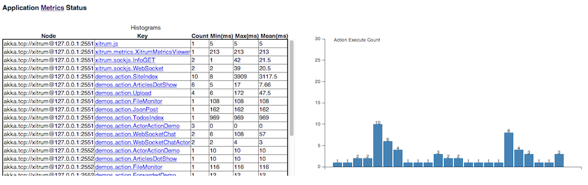

Metrics¶
Xitrum collects JVM heap memory, CPU, and actions’ execution status from each node of your application’s Akka cluster. It publishes the metrics as JSON data. Xitrum also lets you publish your own metrics.
This metrics feature is based on the library Coda Hale Metrics.
Collect metrics¶
Heap memory and CPU¶
JVM heap memory and CPU will be collected as NodeMetrics of Akka actor system from each node.
Heap memory:

CPU: Number of processors and load average

Action metrics¶
Xitrum measure actions’ execution status of each node as a Histogram. You can know how many times actions were executed, and execution time of non-async actions.
Latest execution time of a specific action:

Collect your custom metrics¶
In addition to default metrics above, you can collect your custom metrics.
xitrum.Metrics is a shortcut for gauge, counter, meter,
timer and histogram. Please read about
Coda Hale Metrics and
its Scala implementation
to know how to use them.
Timer example:
import xitrum.{Action, Metrics}
import xitrum.annotation.GET
object MyAction {
lazy val myTimer = Metrics.timer("myTimer")
}
@GET("my/action")
class MyAction extends Action {
import MyAction._
def execute() {
myTimer.time {
// Something that you want to measure execution time
...
}
...
}
}
Publish metrics¶
Xitrum publish latest value of metrics as JSON format with specified interval. This is a volatile value and not be kept in persistently.
HeapMemory:
{
"TYPE" : "heapMemory",
"SYSTEM" : akka.actor.Address.system,
"HOST" : akka.actor.Address.host,
"PORT" : akka.actor.Address.port,
"HASH" : akka.actor.Address.hashCode,
"TIMESTAMP" : akka.cluster.NodeMetrics.timestamp,
"USED" : Number as byte,
"COMMITTED" : Number as byte,
"MAX" : Number as byte
}
CPU:
{
"TYPE" : "cpu",
"SYSTEM" : akka.actor.Address.system,
"HOST" : akka.actor.Address.host,
"PORT" : akka.actor.Address.port,
"HASH" : akka.actor.Address.hashCode,
"TIMESTAMP" : akka.cluster.NodeMetrics.timestamp
"SYSTEMLOADAVERAGE" : Number,
"CPUCOMBINED" : Number,
"PROCESSORS" : Number
}
MetricsRegistry will be parsed with metrics-json.
Xitrum default viewer¶
Xitrum provides default metrics viewer at URL /xitrum/metrics/viewer?api_key=<see xitrum.conf>.
This URL shows graphs like above. The graphs are created using D3.js.
The URL can be generated with:
import xitrum.Config
import xitrum.metrics.XitrumMetricsViewer
url[XitrumMetricsViewer]("api_key" -> Config.xitrum.metrics.get.apiKey)
Jconsole viewer¶
You can see it with JVM Reporter.

Start JMX reporter:
import com.codahale.metrics.JmxReporter
object Boot {
def main(args: Array[String]) {
Server.start()
JmxReporter.forRegistry(xitrum.Metrics.registry).build().start()
}
}
Then run the jconsole command.
Display metrics with custom viewer¶
The metrics will be published at SockJS URL xitrum/metrics/channel as JSON.
jsAddMetricsNameSpace is a convenient JavaScript snippet that Xitrum provides
for creating connection to this endpoint.
Implement your own JSON handler, and call initMetricsChannel with your handler.
Action example:
import xitrum.annotation.GET
import xitrum.metrics.MetricsViewer
@GET("my/metrics/viewer")
class MySubscriber extends MetricsViewer {
def execute() {
jsAddMetricsNameSpace("window")
jsAddToView("""
function onValue(json) {
console.log(json);
}
function onClose(){
console.log("channel closed");
}
window.initMetricsChannel(onValue, onClose);
""")
respondView()
}
}
Save metrics¶
To save memory, Xitrum doesn’t remember old metrics values. If you want to save metrics to the database or files for later use, you need to implement your custom subscriber.
Example:
import akka.actor.Actor
import xitrum.metrics.PublisherLookUp
class MySubscriber extends Actor with PublisherLookUp {
override def preStart() {
lookUpPublisher()
}
def receive = {
case _ =>
}
override def doWithPublisher(globalPublisher: ActorRef) = {
context.become {
// When run in multinode environment
case multinodeMetrics: Set[NodeMetrics] =>
// Save to DB or write to file.
// When run in single node environment
case nodeMetrics: NodeMetrics =>
// Save to DB or write to file.
case Publish(registryAsJson) =>
// Save to DB or write to file.
case _ =>
}
}
}